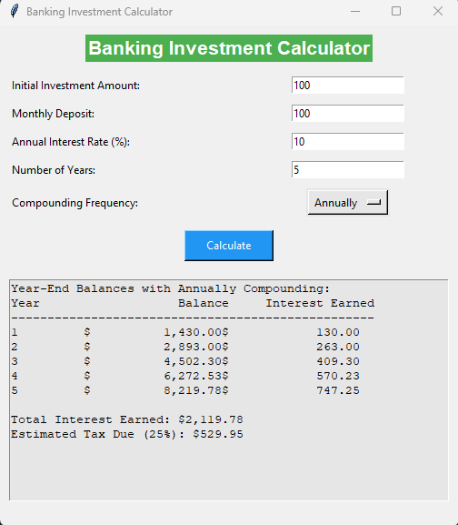

Artifact Overview
The artifact I chose is the investment calculator that was originally written in CS 210. This project was designed for users to input initial investment, monthly deposit amounts, annual interest rate, and number of years. The original design had users inputting this data into the command line and didn’t offer any compounding frequency options. For the enchantment I decided to migrate the project for C++ to Python and improve the functionality and usability. I did this by adding a GUI instead of command line. This upgrade not only helped to modernize the project but also helped to show off my software engineering, Ui development, and language understanding skills.
Enhanced Code: View on GitHub
Original Code: View on GitHub
Narrative: View on GitHub
Justification
- Migrated project from C++ to Python to demonstrate language adaptability.
- Added a Tkinter-based GUI for better usability and cross-platform support.
- Introduced compounding frequency options to add to functionality.
- Implemented input validation to enhance reliability and security.
Program Outcomes Demonstrated
- Technical Implementation: Demonstrated my ability to understand multiple programming languages and migrate the codebase from C++ to Python while adding a modern GUI using Tkinter, improving both functionality and cross-platform usability.
- Professional Communication: Improved the user experience by designing a clear, easy to use graphical interface, making the application useable by a bigger audience with less technical background.
- Security Mindset: Incorporated input validation to prevent invalid or unsafe user entries. This improved the application's reliability by guarding against improper usage or input errors.
Reflection
During the enhancement of this artifact, I learned a good bit about the differences between python and C++. Migrating the core functionality of the program while keeping the functionality intact was a bit challenging, however the hardest part was adding the compounding frequency calculations. Another challenge was making sure that the GUI was user friendly and easy on the eyes. Adding the compounding frequency dropdown and user inputs with labels required a good understanding of UI design. By adding a good UI and better error handling I enhanced the artifacts usability and made it compatible with multiple OS instead of just windows like the original. This project helped my understanding of GUI development with Tkinter and demonstrated my ability to migrate, enhance, and modernize software solutions.